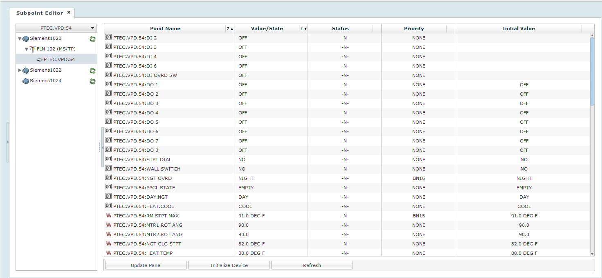

Subpoint Editor

Item | Description |
Point Name | Displays the name of the point. |
Value State | Displays the current value of the point. |
Status | Displays the current status of the point. |
Priority | Displays the priority of the point. |
Initial Value | Displays the initial value of the point. |
Update Panel | Allows you to update the panel with initial values. |
Initialize Device | Allows you to initialize the values set by commissioning the device. |
Refresh | Refreshes the display values. |
Columns and Rows: Width, Sorting, and Ordering
The width and order of the Subpoint Editor report table columns can be changed in the Report pane. The report information can also be sorted by column.
- To change the width of the columns, click and hold the vertical edge of the column header and move the line to the desired width.
- To change the order of the columns, drag the column to the desired location.
- To sort the report information by column, click the arrow in the column header. The numbers next to the column names indicate the sorting priority.